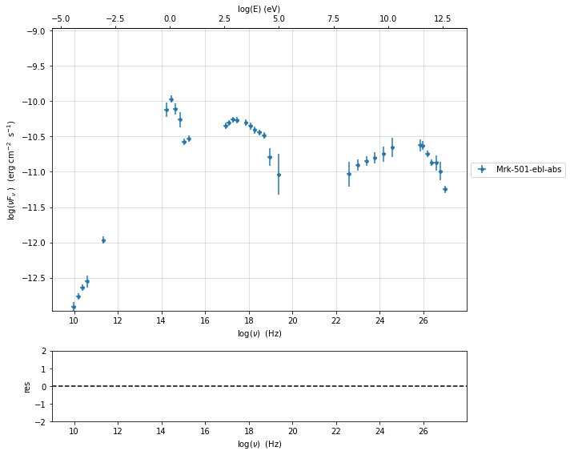
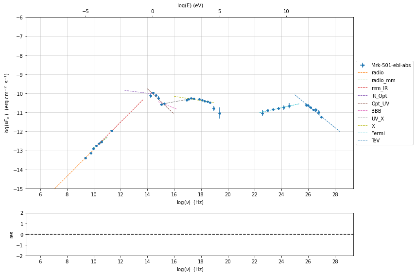

Example to use the sherpa plugin with the sherpa interface¶
In this tutorial we show how to import a jetset model into Sherpa, and finally we perform a model fitting with Sherpa.
import warnings
warnings.filterwarnings('ignore')
import matplotlib.pylab as plt
import jetset
from jetset.test_data_helper import test_SEDs
from jetset.data_loader import ObsData,Data
from jetset.plot_sedfit import PlotSED
from jetset.test_data_helper import test_SEDs
test_SEDs
['/Users/orion/anaconda3/envs/jetset/lib/python3.8/site-packages/jetset/test_data/SEDs_data/SED_3C345.ecsv',
'/Users/orion/anaconda3/envs/jetset/lib/python3.8/site-packages/jetset/test_data/SEDs_data/SED_MW_Mrk421_EBL_DEABS.ecsv',
'/Users/orion/anaconda3/envs/jetset/lib/python3.8/site-packages/jetset/test_data/SEDs_data/SED_MW_Mrk501_EBL_ABS.ecsv',
'/Users/orion/anaconda3/envs/jetset/lib/python3.8/site-packages/jetset/test_data/SEDs_data/SED_MW_Mrk501_EBL_DEABS.ecsv']
Loading data¶
see the data_format user guide for further information about loading data
print(test_SEDs[2])
data=Data.from_file(test_SEDs[2])
/Users/orion/anaconda3/envs/jetset/lib/python3.8/site-packages/jetset/test_data/SEDs_data/SED_MW_Mrk501_EBL_ABS.ecsv
%matplotlib inline
sed_data=ObsData(data_table=data)
sed_data.group_data(bin_width=0.2)
sed_data.add_systematics(0.1,[10.**6,10.**29])
p=sed_data.plot_sed()
================================================================================ * binning data * ---> N bins= 90 ---> bin_widht= 0.2 ================================================================================
sed_data.save('Mrk_501.pkl')
phenomenological model constraining¶
see the Phenomenological model constraining: application user guide for further information about phenomenological constraining
spectral indices¶
from jetset.sed_shaper import SEDShape
my_shape=SEDShape(sed_data)
my_shape.eval_indices(minimizer='lsb',silent=True)
p=my_shape.plot_indices()
p.setlim(y_min=1E-15,y_max=1E-6)
================================================================================ * evaluating spectral indices for data * ================================================================================
sed shaper¶
mm,best_fit=my_shape.sync_fit(check_host_gal_template=True,
Ep_start=None,
minimizer='lsb',
silent=True,
fit_range=[10.,21.])
================================================================================ * Log-Polynomial fitting of the synchrotron component * ---> first blind fit run, fit range: [10.0, 21.0] ---> class: HSP ---> class: HSPTable length=6
| model name | name | val | bestfit val | err + | err - | start val | fit range min | fit range max | frozen |
|---|---|---|---|---|---|---|---|---|---|
| LogCubic | b | -6.411143e-02 | -6.411143e-02 | 7.838958e-03 | -- | -4.778764e-02 | -1.000000e+01 | 0.000000e+00 | False |
| LogCubic | c | -1.751705e-03 | -1.751705e-03 | 1.127020e-03 | -- | 3.576201e-03 | -1.000000e+01 | 1.000000e+01 | False |
| LogCubic | Ep | 1.703747e+01 | 1.703747e+01 | 9.437333e-02 | -- | 1.626870e+01 | 0.000000e+00 | 3.000000e+01 | False |
| LogCubic | Sp | -1.030068e+01 | -1.030068e+01 | 1.884116e-02 | -- | -1.025412e+01 | -3.000000e+01 | 0.000000e+00 | False |
| host_galaxy | nuFnu_p_host | -1.006556e+01 | -1.006556e+01 | 5.462500e-02 | -- | -1.025412e+01 | -1.225412e+01 | -8.254123e+00 | False |
| host_galaxy | nu_scale | 1.730750e-02 | 1.730750e-02 | 3.694838e-03 | -- | 0.000000e+00 | -5.000000e-01 | 5.000000e-01 | False |
---> sync nu_p=+1.703747e+01 (err=+9.437333e-02) nuFnu_p=-1.030068e+01 (err=+1.884116e-02) curv.=-6.411143e-02 (err=+7.838958e-03)
================================================================================
my_shape.IC_fit(fit_range=[23.,29.],minimizer='minuit',silent=True)
p=my_shape.plot_shape_fit()
p.setlim(y_min=1E-15)
================================================================================ * Log-Polynomial fitting of the IC component * ---> fit range: [23.0, 29.0] ---> LogCubic fitTable length=4
| model name | name | val | bestfit val | err + | err - | start val | fit range min | fit range max | frozen |
|---|---|---|---|---|---|---|---|---|---|
| LogCubic | b | -1.565399e-01 | -1.565399e-01 | 2.551779e-02 | -- | -1.000000e+00 | -1.000000e+01 | 0.000000e+00 | False |
| LogCubic | c | -4.351917e-02 | -4.351917e-02 | 2.032066e-02 | -- | -1.000000e+00 | -1.000000e+01 | 1.000000e+01 | False |
| LogCubic | Ep | 2.529709e+01 | 2.529709e+01 | 1.817241e-01 | -- | 2.536916e+01 | 0.000000e+00 | 3.000000e+01 | False |
| LogCubic | Sp | -1.058825e+01 | -1.058825e+01 | 5.046950e-02 | -- | -1.000000e+01 | -3.000000e+01 | 0.000000e+00 | False |
---> IC nu_p=+2.529709e+01 (err=+1.817241e-01) nuFnu_p=-1.058825e+01 (err=+5.046950e-02) curv.=-1.565399e-01 (err=+2.551779e-02)
================================================================================
Model constraining¶
In this step we are not fitting the model, we are just obtaining the
phenomenological pre_fit model, that will be fitted in using minuit
ore least-square bound, as shown below
from jetset.obs_constrain import ObsConstrain
from jetset.model_manager import FitModel
sed_obspar=ObsConstrain(beaming=25,
B_range=[0.001,0.1],
distr_e='lppl',
t_var_sec=3*86400,
nu_cut_IR=1E12,
SEDShape=my_shape)
prefit_jet=sed_obspar.constrain_SSC_model(electron_distribution_log_values=False,silent=True)
prefit_jet.save_model('prefit_jet.pkl')
================================================================================ * constrains parameters from observable *Table length=11
| model name | name | par type | units | val | phys. bound. min | phys. bound. max | log | frozen |
|---|---|---|---|---|---|---|---|---|
| jet_leptonic | R | region_size | cm | 1.056958e+16 | 1.000000e+03 | 1.000000e+30 | False | False |
| jet_leptonic | R_H | region_position | cm | 1.000000e+17 | 0.000000e+00 | -- | False | True |
| jet_leptonic | B | magnetic_field | gauss | 5.050000e-02 | 0.000000e+00 | -- | False | False |
| jet_leptonic | beam_obj | beaming | lorentz-factor* | 2.500000e+01 | 1.000000e-04 | -- | False | False |
| jet_leptonic | z_cosm | redshift | 3.360000e-02 | 0.000000e+00 | -- | False | False | |
| jet_leptonic | gmin | low-energy-cut-off | lorentz-factor* | 4.703917e+02 | 1.000000e+00 | 1.000000e+09 | False | False |
| jet_leptonic | gmax | high-energy-cut-off | lorentz-factor* | 2.310708e+06 | 1.000000e+00 | 1.000000e+15 | False | False |
| jet_leptonic | N | emitters_density | 1 / cm3 | 7.087120e+00 | 0.000000e+00 | -- | False | False |
| jet_leptonic | gamma0_log_parab | turn-over-energy | lorentz-factor* | 1.045836e+04 | 1.000000e+00 | 1.000000e+09 | False | False |
| jet_leptonic | s | LE_spectral_slope | 2.248787e+00 | -1.000000e+01 | 1.000000e+01 | False | False | |
| jet_leptonic | r | spectral_curvature | 3.205571e-01 | -1.500000e+01 | 1.500000e+01 | False | False |
================================================================================
pl=prefit_jet.plot_model(sed_data=sed_data)
pl.add_model_residual_plot(prefit_jet,sed_data)
pl.setlim(y_min=1E-15,x_min=1E7,x_max=1E29)
Model fitting with using a Sherpa model¶
we show now, how to import a jetset model into a Sherpa model
from jetset.sherpa_plugin import JetsetSherpaModel
from jetset.template_2Dmodel import EBLAbsorptionTemplate
ebl_franceschini=EBLAbsorptionTemplate.from_name('Franceschini_2008')
from jetset.jet_model import Jet
prefit_jet=Jet.load_model('prefit_jet.pkl')
| model name | name | par type | units | val | phys. bound. min | phys. bound. max | log | frozen |
|---|---|---|---|---|---|---|---|---|
| jet_leptonic | gmin | low-energy-cut-off | lorentz-factor* | 4.703917e+02 | 1.000000e+00 | 1.000000e+09 | False | False |
| jet_leptonic | gmax | high-energy-cut-off | lorentz-factor* | 2.310708e+06 | 1.000000e+00 | 1.000000e+15 | False | False |
| jet_leptonic | N | emitters_density | 1 / cm3 | 7.087120e+00 | 0.000000e+00 | -- | False | False |
| jet_leptonic | gamma0_log_parab | turn-over-energy | lorentz-factor* | 1.045836e+04 | 1.000000e+00 | 1.000000e+09 | False | False |
| jet_leptonic | s | LE_spectral_slope | 2.248787e+00 | -1.000000e+01 | 1.000000e+01 | False | False | |
| jet_leptonic | r | spectral_curvature | 3.205571e-01 | -1.500000e+01 | 1.500000e+01 | False | False | |
| jet_leptonic | R | region_size | cm | 1.056958e+16 | 1.000000e+03 | 1.000000e+30 | False | False |
| jet_leptonic | R_H | region_position | cm | 1.000000e+17 | 0.000000e+00 | -- | False | True |
| jet_leptonic | B | magnetic_field | gauss | 5.050000e-02 | 0.000000e+00 | -- | False | False |
| jet_leptonic | beam_obj | beaming | lorentz-factor* | 2.500000e+01 | 1.000000e-04 | -- | False | False |
| jet_leptonic | z_cosm | redshift | 3.360000e-02 | 0.000000e+00 | -- | False | False |
The following instructions create a Sherpa model for each of the existing jetset models.
sherpa_model_jet=JetsetSherpaModel(prefit_jet)
sherpa_model_gal=JetsetSherpaModel(my_shape.host_gal)
sherpa_model_ebl=JetsetSherpaModel(ebl_franceschini)
jetset model name R renamed to R_sh due to sherpa internal naming convention
sherpa_model=(sherpa_model_jet+sherpa_model_gal)*sherpa_model_ebl
sherpa_model
<BinaryOpModel model instance '((jet_leptonic + host_galaxy) * Franceschini_2008)'>
Model
| Component | Parameter | Thawed | Value | Min | Max | Units |
|---|---|---|---|---|---|---|
| jet_leptonic | gmin | 470.39174855643597 | 1.0 | 1000000000.0 | lorentz-factor* | |
| gmax | 2310708.197406515 | 1.0 | 1000000000000000.0 | lorentz-factor* | ||
| N | 7.087120469822453 | 0.0 | MAX | 1 / cm3 | ||
| gamma0_log_parab | 10458.36315393129 | 1.0 | 1000000000.0 | lorentz-factor* | ||
| s | 2.2487867709713574 | -10.0 | 10.0 | |||
| r | 0.320557142636666 | -15.0 | 15.0 | |||
| R_sh | 1.0569580559768326e+16 | 1000.0 | 1e+30 | cm | ||
| R_H | 1e+17 | 0.0 | MAX | cm | ||
| B | 0.0505 | 0.0 | MAX | gauss | ||
| beam_obj | 25.0 | 0.0001 | MAX | lorentz-factor* | ||
| z_cosm | 0.0336 | 0.0 | MAX | |||
| host_galaxy | nuFnu_p_host | -10.065562059421486 | -12.254122641095535 | -8.254122641095535 | erg / (cm2 s) | |
| nu_scale | 0.017307503006438463 | -0.5 | 0.5 | Hz | ||
| Franceschini_2008 | z_cosm | 1.0 | 0.0 | MAX |
sherpa_model_ebl.z_cosm = sherpa_model_jet.z_cosm
sherpa_model
<BinaryOpModel model instance '((jet_leptonic + host_galaxy) * Franceschini_2008)'>
Model
| Component | Parameter | Thawed | Value | Min | Max | Units |
|---|---|---|---|---|---|---|
| jet_leptonic | gmin | 470.39174855643597 | 1.0 | 1000000000.0 | lorentz-factor* | |
| gmax | 2310708.197406515 | 1.0 | 1000000000000000.0 | lorentz-factor* | ||
| N | 7.087120469822453 | 0.0 | MAX | 1 / cm3 | ||
| gamma0_log_parab | 10458.36315393129 | 1.0 | 1000000000.0 | lorentz-factor* | ||
| s | 2.2487867709713574 | -10.0 | 10.0 | |||
| r | 0.320557142636666 | -15.0 | 15.0 | |||
| R_sh | 1.0569580559768326e+16 | 1000.0 | 1e+30 | cm | ||
| R_H | 1e+17 | 0.0 | MAX | cm | ||
| B | 0.0505 | 0.0 | MAX | gauss | ||
| beam_obj | 25.0 | 0.0001 | MAX | lorentz-factor* | ||
| z_cosm | 0.0336 | 0.0 | MAX | |||
| host_galaxy | nuFnu_p_host | -10.065562059421486 | -12.254122641095535 | -8.254122641095535 | erg / (cm2 s) | |
| nu_scale | 0.017307503006438463 | -0.5 | 0.5 | Hz | ||
| Franceschini_2008 | z_cosm | linked | 0.0336 | ⇐ jet_leptonic.z_cosm | ||
sherpa_model_jet.R_H.freeze()
sherpa_model_jet.z_cosm.freeze()
sherpa_model_gal.nu_scale.freeze()
sherpa_model_jet.beam_obj.min = 5
sherpa_model_jet.beam_obj.max = 50.
sherpa_model_jet.R_sh.min = 10**15.
sherpa_model_jet.R_sh.max = 10**17.5
sherpa_model_jet.gmax.min = 1E5
sherpa_model_jet.gmax.max = 1E7
sherpa_model
<BinaryOpModel model instance '((jet_leptonic + host_galaxy) * Franceschini_2008)'>
Model
| Component | Parameter | Thawed | Value | Min | Max | Units |
|---|---|---|---|---|---|---|
| jet_leptonic | gmin | 470.39174855643597 | 1.0 | 1000000000.0 | lorentz-factor* | |
| gmax | 2310708.197406515 | 100000.0 | 10000000.0 | lorentz-factor* | ||
| N | 7.087120469822453 | 0.0 | MAX | 1 / cm3 | ||
| gamma0_log_parab | 10458.36315393129 | 1.0 | 1000000000.0 | lorentz-factor* | ||
| s | 2.2487867709713574 | -10.0 | 10.0 | |||
| r | 0.320557142636666 | -15.0 | 15.0 | |||
| R_sh | 1.0569580559768326e+16 | 1000000000000000.0 | 3.1622776601683795e+17 | cm | ||
| R_H | 1e+17 | 0.0 | MAX | cm | ||
| B | 0.0505 | 0.0 | MAX | gauss | ||
| beam_obj | 25.0 | 5.0 | 50.0 | lorentz-factor* | ||
| z_cosm | 0.0336 | 0.0 | MAX | |||
| host_galaxy | nuFnu_p_host | -10.065562059421486 | -12.254122641095535 | -8.254122641095535 | erg / (cm2 s) | |
| nu_scale | 0.017307503006438463 | -0.5 | 0.5 | Hz | ||
| Franceschini_2008 | z_cosm | linked | 0.0336 | ⇐ jet_leptonic.z_cosm | ||
from sherpa import data
from sherpa.fit import Fit
from sherpa.stats import Chi2
from sherpa.optmethods import LevMar, NelderMead
sherpa_data=data.Data1D("sed", sed_data.table['nu_data'], sed_data.table['nuFnu_data'], staterror=sed_data.table['dnuFnu_data'])
fitter = Fit(sherpa_data, sherpa_model, stat=Chi2(), method=LevMar())
fit_range=[1e11,1e29]
sherpa_data.notice(fit_range[0], fit_range[1])
results = fitter.fit()
print("fit succeeded", results.succeeded)
fit succeeded True
results
<Fit results instance>
Fit parameters
| Parameter | Best-fit value | Approximate error |
|---|---|---|
| jet_leptonic.gmin | 137.121 | ± 415.258 |
| jet_leptonic.gmax | 2.09775e+06 | ± 0 |
| jet_leptonic.N | 13.5871 | ± 44.3954 |
| jet_leptonic.gamma0_log_parab | 2373.13 | ± 0 |
| jet_leptonic.s | 2.0909 | ± 0.0399267 |
| jet_leptonic.r | 0.201778 | ± 0.0160092 |
| jet_leptonic.R_sh | 1.49982e+16 | ± 0 |
| jet_leptonic.B | 0.0108858 | ± 0.00229933 |
| jet_leptonic.beam_obj | 44.972 | ± 5.47095 |
| host_galaxy.nuFnu_p_host | -10.0639 | ± 0.051195 |
Summary (10)
Method
levmar
Statistic
chi2
Final statistic
8.021
Number of evaluations
524
Reduced statistic
0.381953
Probability (Q-value)
0.995055
Initial statistic
124.614
Δ statistic
116.593
Number of data points
31
Degrees of freedom
21
sherpa_model
<BinaryOpModel model instance '((jet_leptonic + host_galaxy) * Franceschini_2008)'>
Model
| Component | Parameter | Thawed | Value | Min | Max | Units |
|---|---|---|---|---|---|---|
| jet_leptonic | gmin | 137.12136279004176 | 1.0 | 1000000000.0 | lorentz-factor* | |
| gmax | 2097752.099964037 | 100000.0 | 10000000.0 | lorentz-factor* | ||
| N | 13.587127748284898 | 0.0 | MAX | 1 / cm3 | ||
| gamma0_log_parab | 2373.1255420068783 | 1.0 | 1000000000.0 | lorentz-factor* | ||
| s | 2.0908996547652823 | -10.0 | 10.0 | |||
| r | 0.2017776523199925 | -15.0 | 15.0 | |||
| R_sh | 1.4998210278443002e+16 | 1000000000000000.0 | 3.1622776601683795e+17 | cm | ||
| R_H | 1e+17 | 0.0 | MAX | cm | ||
| B | 0.010885837346301244 | 0.0 | MAX | gauss | ||
| beam_obj | 44.97202054482866 | 5.0 | 50.0 | lorentz-factor* | ||
| z_cosm | 0.0336 | 0.0 | MAX | |||
| host_galaxy | nuFnu_p_host | -10.063947287805279 | -12.254122641095535 | -8.254122641095535 | erg / (cm2 s) | |
| nu_scale | 0.017307503006438463 | -0.5 | 0.5 | Hz | ||
| Franceschini_2008 | z_cosm | linked | 0.0336 | ⇐ jet_leptonic.z_cosm | ||
from jetset.sherpa_plugin import plot_sherpa_model
p=plot_sherpa_model(sherpa_model_jet,label='SSC',line_style='--')
p=plot_sherpa_model(sherpa_model_gal,plot_obj=p,label='host gal',line_style='--')
p=plot_sherpa_model(sherpa_model=sherpa_model,plot_obj=p,sed_data=sed_data,fit_range=fit_range,add_res=True,label='(SSC+host gal)*ebl')
You can access all the sherpa fetarues https://sherpa.readthedocs.io/en/latest/fit/index.html
from sherpa.plot import IntervalProjection
iproj = IntervalProjection()
iproj.prepare(fac=5, nloop=15)
iproj.calc(fitter, sherpa_model_jet.s)
iproj.plot()
WARNING: hard minimum hit for parameter jet_leptonic.gmin
WARNING: hard maximum hit for parameter jet_leptonic.gmin
WARNING: hard minimum hit for parameter jet_leptonic.gmax
WARNING: hard maximum hit for parameter jet_leptonic.gmax